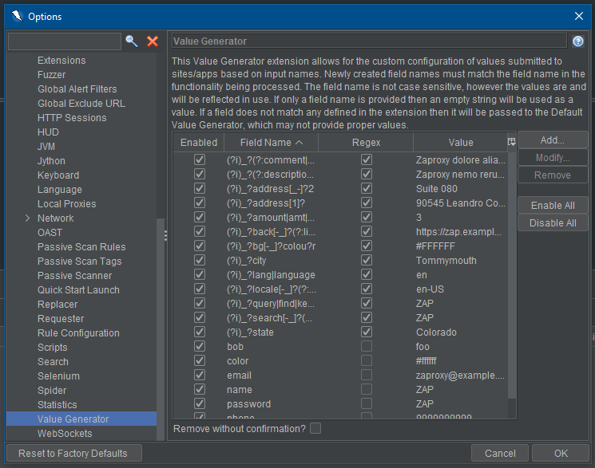

Esta extensión del Controlador de Formas permite la configuración personalizada de valores usados en formas basadas en nombres de campo.
With this add-on the user can create new fields for fields that they wish to set the value of. Additionally, the user can modify any existing field's name and value to fit the fields that they are trying to set. Cualquier campo también puede ser desactivado o removido por el usuario para que los valores personalizados no sean usados. Field names, values, enabled, and regex status will be stored even after a ZAP session has concluded.
Los complementos proporcionan un arreglo de nombres de campo predeterminados que pueden ser encontrados en una forma, y un valor correspondiente para cada campo predeterminado. Estos valores predeterminados pueden ser desactivados, modificados o eliminados si el usuario así lo desea.
El Controlador de Formas puede ser encontrado en las Opciones. Seleccionando la pestaña de Controlador de Forma se mostrará una tabla con todos los valores existentes que se encuentran actualmente definidos. Se muestra un ejemplo a continuación.
Para definir valores de campo adicionales puede hacer clic en el botón Añadir. Esto generará un cuadro de diálogo para que el usuario pueda proporcionar información sobre el campo.

Favor tomar nota de lo siguiente al añadir un nuevo campo:
La extensión le permite al usuario modificar valores de campos existentes. Esto se puede hacer al seleccionar el campo que usted desea modificar y haciendo clic en el botón de Modificar.

Al modificar un campo, el usuario se encuentra limitado por las mismas reglas que al crear uno nuevo. La más común de las restricciones al modificar un campo es que el nombre no puede ser el mismo que el de un campo previamente existente. (es decir, no se permiten campos duplicados)
El usuario puede remover campos en cualquier momento. Para hacerlo, simplemente seleccione el campo que se desea remover y haga clic en el botón Remover. Tome en consideración que se le pedirá confirmar la eliminación del campo antes de proceder, a menos que la casilla Remover sin confirmación se encuentre seleccionada.
Un usuario podría encontrarse con que no desea definir cada campo en una forma, sino más bien querer definir unos pocos dentro de la forma.
Cualquier campo que no se encuentre definido en el complemento del Controlador de Forma usará un valor ZAP predeterminado que será generado para cada tipo de campo. (Por ejemplo: un campo de texto tendrá como valor "ZAP")
A number of statistics are exposed via the add-on for add, modify, and remove operations.
In the following examples {name} will be the actual name of the Form Handler field.